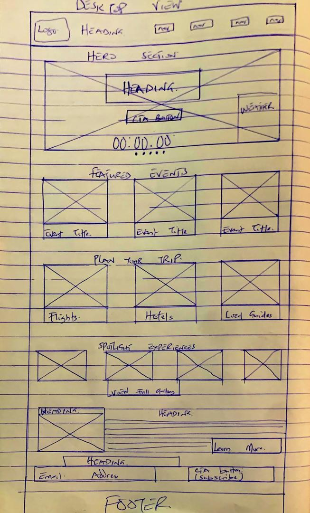

Site Name
Name: CarnivalCalabar.com or ExperienceCalabar.ng
This name captures the vibrant essence of Africa's biggest street party—Calabar Carnival. It’s descriptive,
memorable, and inclusive for both tourists and locals.
Site Purpose
The website is a complete hospitality and tourism hub for visitors and participants of the Calabar Carnival.
It helps users:
- Learn about the event schedule, cultural groups, and highlights
- Plan travel and lodging with mock booking forms and info
- Experience past and present carnival moments through media
- Get real-time info (weather, countdowns, currency conversion)
Scenarios
- What events are happening during the carnival week and where?
- Where can I find hotel and flight info for my visit?
- What’s the history and cultural significance of the Calabar Carnival?
Color Scheme
- Deep Indigo Blue (#1C2B49) – Backgrounds, navbars, hero overlays
- Sunburst Gold (#FFD700) – CTAs, highlights, borders
- Carnival Red (#E63946) – Accent color for headings and buttons
- Green (#2A9D8F) – Footer, maps, nature highlights
- Off-white and Light Grays – Backgrounds, text areas, cards
This palette was chosen for vibrancy, accessibility, and cultural relevance. All colors meet WCAG contrast
standards.
Typography
- Montserrat – Body text and UI elements (clean and readable)
- Merriweather – Headlines and titles (serif for elegance)
This pairing provides modern clarity with a touch of sophistication for cultural storytelling.
Wireframes
Mobile View (320px–768px)
Desktop View (1024px+)

Note: Wireframes will evolve as the layout and features are finalized.